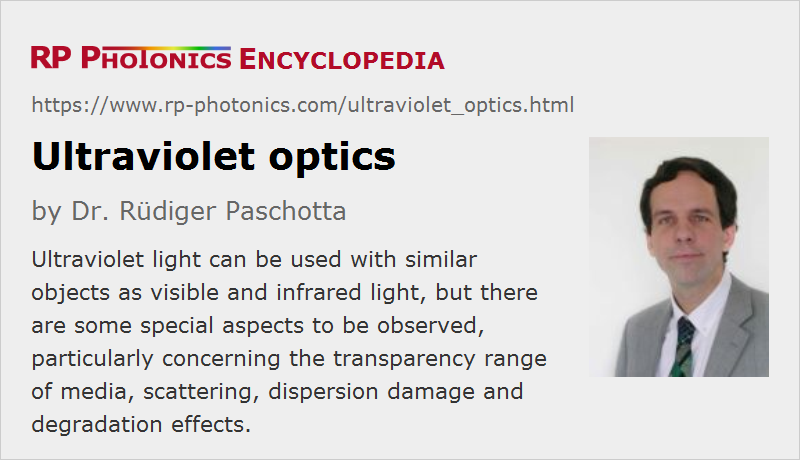

Ultraviolet Optics
Acronym: UV optics
Definition: optical elements for use with ultraviolet light
More general term: optics
German: Ultraviolett-Optik
How to cite the article; suggest additional literature
Author: Dr. Rüdiger Paschotta
Ultraviolet light behaves in many ways just as visible light, and it can thus in principle be used with the same times of optical elements as visible or near-infrared light: focusing and imaging lenses, mirrors, optical windows, beam splitters, prisms, polarizers, waveplates, optical filters etc. UV mirrors and lenses are also available in aspheric versions, and anti-reflection coatings are available. However, there are certain special aspects to be observed for applications in the UV region:
- Transparency range: Many optical media which are transparent for visible light become strongly absorbing when one penetrates the ultraviolet spectral region with optical wavelengths below 400 nm.
This is essentially because the photon energy then becomes comparable to the band gap energy; a single photon is then sufficient for exciting a carrier from the valence band to the conduction band.
Therefore, transparency in the ultraviolet spectral region can be obtained only with dielectric media having a relatively large bandgap.
Examples are certain crystalline optical materials (optical crystals) like CaF2 and some borates.
Even if the bandgap energy of a medium is large enough, there may be substantial UV absorption due to impurities.
For really short wavelengths (EUV), there are no suitable transparent media anymore, and one is limited to reflective optics (see below).
Below about 200 nm wavelength, even air becomes absorbing, so that UV systems for far-UV light need to be evacuated.
- Scattering: Due to the very short wavelengths, ultraviolet light experiences strong scattering even at very tiny imperfections such as scratches on optical services or inhomogeneities within a medium. For example, scattering at very small (sub-wavelength) particles scales with λ−4, getting dramatically stronger for shorter wavelengths. Therefore, a particularly high optical quality of components is required to keep potentially detrimental processes like scattering and beam distortions under control in the ultraviolet. Important material parameters for UV applications are a low bubble and inclusion content, good homogeneity of the refractive index, a small parasitic birefringence. Further, materials should have the potential for polishing surfaces with very small roughness.
- Damage and degradation: Particularly for applications with intense UV lasers, the risk of laser damage and of long-term degradation (solarization) is also important: the propagation losses rise, and increased light scattering is observed.
Various media are known to exhibit significant degradation effects – for example, absorption or scattering losses increasing with time during UV radiation –, but some are relatively tolerant against UV light.
The optical damage threshold of materials is often substantially lower in the UV than for longer wavelengths, because lower-order absorption processes (e.g. two-photon absorption) are sufficient to bridge the bandgap.
Damage and degradation phenomena can strongly depend on certain impurities in the material and on the details of the optical surface finishing.
Note also that any optical surfaces can be degraded e.g. if vapors from lubrication oils get into an intense ultraviolet beam, where certain substances are chemically decomposed and can consequently form absorbing coatings on nearby materials. - Dispersion effects: In the ultraviolet spectral region, many media exhibit substantially stronger chromatic dispersion than in the visible or infrared region. This must be observed, for example, when using lenses for focusing broadband ultraviolet light. Using achromatic optics can then be particularly important.
Examples for UV-transparent Media
UV optics are often made from highly purified calcium fluoride (CaF2), which has a very low UV absorption, high homogeneity, low birefringence, relatively high hardness (compared with other fluoride materials), high physical stability, and high optical damage threshold. It can be used down to ≈ 160 nm and is thus suitable for use, e.g., with argon fluoride (ArF) excimer lasers. However, it is brittle, naturally anisotropic, and hygroscopic. Similar properties are obtained for other purified fluorides such as magnesium fluoride (MgF2) and lithium fluoride (LiF); the latter can be used down to 110 nm. In addition to good UV transparency, such fluorides also offer good infrared properties up to wavelengths of 5 μm and beyond.
As an alternative, UV-grade fused silica can be used even for wavelengths down to ≈ 200 nm, whereas the cheaper standard-grade fused silica has significant attenuation already below 260 nm.
Similar constraints apply to materials chosen for making dielectric coatings, for example in the form of anti-reflection coatings. A frequently used AR coating material is magnesium fluoride (MgF2). Often, manufacturers offer UV anti-reflection coatings without revealing what material(s) they are made of.
Another possible material choice is artificial diamond, which is transparent down to ≈ 230 nm and very robust, but expensive.
For nonlinear frequency conversion, one often uses borate crystals such as LBO and BBO, which exhibit relatively good UV transparency and high resistance.
Some optical fibers can be used in the near-ultraviolet spectral region, although with relatively high propagation losses. Fiber delivery of ultraviolet light is usually not feasible for shorter wavelengths and/or high optical powers.
Common UV Wavelengths
In laser technology, a few ultraviolet wavelengths are particularly common:
- 355 nm is obtained by frequency tripling of Nd:YAG lasers
- 266 nm is obtained by frequency quadrupling of Nd:YAG lasers
- 193 nm and a few other wavelengths are made by certain types of excimer lasers.
Therefore, certain optical elements like lenses and mirrors are specifically developed for such wavelengths and may then be sold as excimer optics, for example.
EUV Optics: Essentially Limited to Reflective Optics
In the EUV region, basically all solid materials are relatively strongly absorbing, and even air causes strong attenuation below ≈ 200 nm, so that e.g. lithography with vacuum UV or EUV light below 100 nm has to be performed in vacuum. Bragg mirrors can still be made for the EUV region, e.g. with molybdenum/silicon (Mo/Si) structures, which allow, e.g., ≈ 70% reflectivity at 12 nm wavelength to be reached. Due to this limited reflectivity, EUV optics have to be designed with the smallest possible number of reflecting surfaces.
Suppliers
The RP Photonics Buyer's Guide contains 61 suppliers for ultraviolet optics. Among them:
Questions and Comments from Users
Here you can submit questions and comments. As far as they get accepted by the author, they will appear above this paragraph together with the author’s answer. The author will decide on acceptance based on certain criteria. Essentially, the issue must be of sufficiently broad interest.
Please do not enter personal data here; we would otherwise delete it soon. (See also our privacy declaration.) If you wish to receive personal feedback or consultancy from the author, please contact him e.g. via e-mail.
By submitting the information, you give your consent to the potential publication of your inputs on our website according to our rules. (If you later retract your consent, we will delete those inputs.) As your inputs are first reviewed by the author, they may be published with some delay.
See also: ultraviolet lasers, optical materials, optical crystals, scattering
and other articles in the category general optics
|  |
If you like this page, please share the link with your friends and colleagues, e.g. via social media:
These sharing buttons are implemented in a privacy-friendly way!